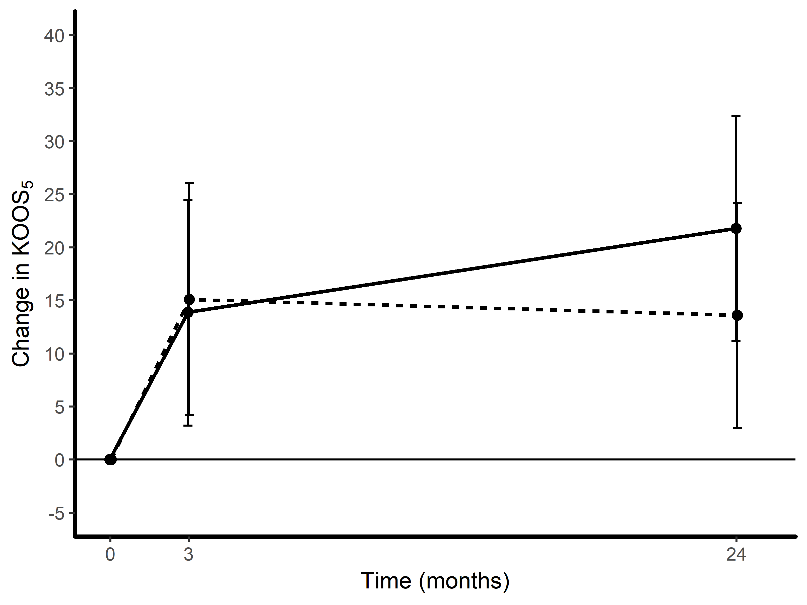

Let’s try to reproduce panel A in this figure published in BMJ Open by Roos et al. (2018), where knee surgery (arthroscopic partial meniscectomy) was compare to sham surgery (skin incision only). The graph shows the mean change from baseline at 3 and 24 months in the primary outcome (KOOS5 score, a higher score is better). Further details can be found in the article.
To make it simple, all data needed for the figure is typed into R in this format.
## MONTH Group lsmean lower.CL upper.CL
## 1 0 APM 0.0 0.0 0.00
## 2 3 APM 13.9 3.2 24.50
## 3 24 APM 21.8 11.2 32.40
## 4 0 Placebo 0.0 0.0 0.00
## 5 3 Placebo 15.1 4.2 26.07
## 6 24 Placebo 13.6 3.0 24.20Click on ‘CODE’ to see how the data is typed into R - use the same principle for your own data.
MONTH <- c(0,3,24,0,3,24)
Group <- c("APM","APM","APM","Placebo","Placebo","Placebo")
lsmean <- c(0, 13.9, 21.8, 0, 15.1, 13.6)
lower.CL <- c(0, 3.2, 11.2, 0, 4.2, 3.0)
upper.CL <- c(0, 24.5, 32.4, 0, 26.07, 24.2)
DATA <- data.frame(MONTH, Group, lsmean, lower.CL, upper.CL)
DATA
This is the most simple plot you can make. This is the essential part of the code for making the plot.
Show the code by clicking on ‘CODE’.
library(ggplot2) #If the ggplot2 package is not installed, run this: install.packages("ggplot2")
ggplot(DATA, aes(x = MONTH, y = lsmean, group = Group)) +
geom_line(aes(linetype = Group)) +
geom_errorbar(aes(ymin = lower.CL, ymax = upper.CL))
To replicate the published figure, some changes in the layout are needed.

To fit this figure to your own data, you may want to change the name, limits and breaks specifications in the ‘scale_x_continuous’ and ‘scale_y_continuous’ functions.
library(ggplot2) #If the ggplot2 package is not installed, run this: install.packages("ggplot2")
pd <- position_dodge(width = 0.1)
ggplot(DATA, aes(x = MONTH, y = lsmean, group = Group)) +
geom_line(aes(linetype = Group), size=0.8, position = pd) +
geom_errorbar(aes(ymin = lower.CL, ymax = upper.CL), width = 0.7, position = pd, linetype = 1) +
geom_point(size = 2, position = pd, color = "black") +
geom_hline(yintercept = 0) +
scale_x_continuous(name="Time (months)", limits=c(-0.1,25), breaks=c(0,3,24)) +
scale_y_continuous(name=expression("Change in KOOS"[5]), limits=c(-5, 40),
breaks=c(-5,0,5,10,15,20,25,30,35,40)) +
theme(panel.background = element_rect(fill = "white"),
axis.line.x = element_line(colour = "black", size = 1),
axis.line.y = element_line(colour = "black", size = 1),
legend.position="none")
Need something special for a powerpoint presentation? I have got you covered. The colors are easy to change.
library(ggplot2) #If the ggplot2 package is not installed, run this: install.packages("ggplot2")
pd <- position_dodge(width = 0.1)
ggplot(DATA, aes(x = MONTH, y = lsmean, group = Group, colour = Group)) +
geom_line(size=2, position = pd) +
geom_errorbar(aes(ymin = lower.CL, ymax = upper.CL), width = 2, position = pd, linetype = 3) +
geom_point(size = 2, position = pd) +
geom_hline(yintercept = 0, size=1, colour = "darkgrey") +
scale_x_continuous(name="Time (months)", limits=c(-0.1,25), breaks=c(0,3,24)) +
scale_y_continuous(name=expression("Change in KOOS"[5]), limits=c(-5, 40),
breaks=c(-5,0,5,10,15,20,25,30,35,40)) +
scale_color_manual(values=c('green','deeppink1'))+
theme(axis.title.x = element_text(colour = "white"),
axis.title.y = element_text(colour = "white")) +
theme(plot.background = element_rect(fill = "black"),
panel.background = element_rect(fill = "black"),
panel.grid.major = element_blank(),
panel.grid.minor = element_blank(),
axis.line.x = element_line(colour = "darkgrey", size = 1),
axis.line.y = element_line(colour = "darkgrey", size = 1),
legend.position="none") +
annotate(geom="text", x=21, y=23, label="AMP", colour="green", size=5, fontface="bold", angle=10) +
annotate(geom="text", x=21, y=16, label="Placebo", colour="deeppink1", size=5, fontface="bold", angle=-2)
library(ggplot2) #If the ggplot2 package is not installed, run this: install.packages("ggplot2")
library(grid) #If the grid package is not installed, run this: install.packages("grid")
grad = colorRampPalette(c("red", "yellow"))(10)
pd <- position_dodge(width = 0.1)
ggplot(DATA, aes(x = MONTH, y = lsmean, group = Group)) +
annotation_custom(rasterGrob(grad, width=unit(1,"npc"), height=unit(1,"npc"))) +
geom_line(aes(linetype = Group), size = 1, position = pd, colour = "white") +
geom_errorbar(aes(ymin = lower.CL, ymax = upper.CL), width = 2, position = pd, linetype = 3, color = "white") +
geom_point(size = 1, position = pd, color = "white") +
geom_hline(yintercept = 0, size = 0.8, colour = "white") +
geom_text(aes(label = as.factor(lsmean))) +
scale_x_continuous(name="Time (months)", limits=c(-0.1,25), breaks=c(0,3,24)) +
scale_y_continuous(name=expression("Change in KOOS"[5]), limits=c(-5, 40),
breaks=c(-5,0,5,10,15,20,25,30,35,40)) +
theme(legend.position="none",
axis.line.x = element_line(colour = "white", size = 2),
axis.line.y = element_line(colour = "white", size = 2))